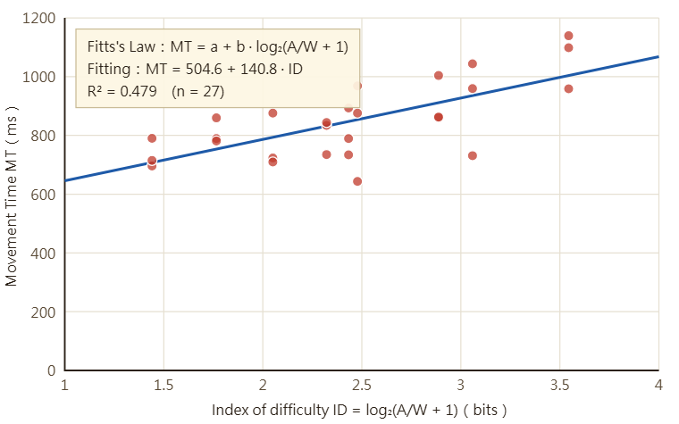

Systemic Change「Distance (A)」and「Width (W)」to measure Movement Time
Number of Trial：0 / 0Current A：– pxCurrent W：– pxLast Trial MT：– ms
Scenario Description
As an online game designer, I want to estimate the range of difficulty level
which won't make the game too hard to play. In that case, I can develop an
appropriate Wrack Mole game, which controls the distance and width of moles
in a reasonable range.
Fitt's Law Experiment Demo Vedio
My Result analysis

Prepare to start the game
A mole will appear on screen for every trial, the length between old and new
position is devoted as A (distance), the size of mole is devoted as
W（width）. Hit the mole as quick as possible.
The system will change the combination of different distances and widths,
and record every movement time.
📈 Fitts's Law Regression Analysis
Every point represent a trial. Axis X means Index of difficulty ID = log₂(A/W + 1)，Axis Y means movement time MT。